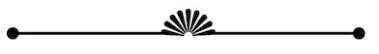

எங்கள் பிரச்சாரம் இயக்கப்படுகிறது
உங்களைப் போன்ற ஆதரவாளர்களின் பங்களிப்புகளால்

சுதந்திரமாக வாழ்வது மனிதனின் உரிமை.
அதுபோலவே மற்றவர்களைச் சார்ந்து வாழ்வது அவன் கடமை.
தற்போதைய நிலையில் இருந்து உண்மையான மாற்றம் ஒரு
அரசியல்வாதியைத் தேர்ந்தெடுப்பதில் இருந்து ஒருபோதும் வராது
- குறிப்பாக அதை வழிநடத்துபவர் அல்ல.
அந்த நிலையை நிலைநிறுத்த அர்ப்பணிக்கப்பட்ட அந்தஸ்து கட்சி.
அரசியலுக்கு வரவேற்கிறோம்
poltifact
பரஸ்பர சண்டை சச்சரவுகளைக் களைந்து, உயர்ந்தவர் தாழ்ந்தவர் என்ற வேறுபாட்டைக் களைந்து சமத்துவ உணர்வை வளர்த்து, தீண்டாமையை ஒழிக்க வேண்டும். ஆங்கிலேயர் ஆட்சிக்கு முன் இருந்த சுயராஜ்ஜியத்தை நாம் மீட்டெடுக்க வேண்டும். அதே தந்தையின் குழந்தைகளை நாம் விரும்ப வேண்டும்.
நீங்கள் அரசியலில் ஆர்வம் காட்டவில்லை என்பதற்காக
0k
active Volunteer
131
campage now
612
area coverage
2
project done
சமீபத்திய அரசியல் செய்திகள்

அரசியல்
சினிமாவில் காவி நிறம் அணியக் கூடாது என்றால், கறுப்பு ஆடைகள் அணிந்து வில்லனாக நடிப்பதால் திராவிடர் கழகத்தினர் எல்லாம் வில்லன்களா? என மதிமுக தலைமை நிலைய செயலாளர் துரை வைகோ கேள்வி எழுப்பியுள்ளார். வாரிசு அரசியல் பற்றிப் பேச பாஜக மாநிலத் தலைவர் அண்ணாமலைக்கு தகுதியே இல்லை, அவரது கட்சியிலேயே பலரது வாரிசுகள் பொறுப்புகளில் இருக்கிறார்கள் என துரை வைகோ தெரிவித்துள்ளார்.
அரசியல்
தமிழ்நாடு அமைச்சரவையில் பெரும் எதிர்பார்ப்பிற்கு இடையில் பல்வேறு மாற்றங்கள் செய்யப்பட்டு உள்ளன. முதல்வர் ஸ்டாலினின் ஒரு இலாக்காவையும் சேர்த்து மொத்தமாக 11 அமைச்சர்களின் இலாக்காக்கள் மாற்றப்பட்டு உள்ளன. உதயநிதி ஸ்டாலினுக்கு இளைஞர் நலன், விளையாட்டுத்துறை வழங்கப்பட்டு உள்ளது. அதேபோல் சிறப்பு திட்ட செயலாக்கம் துறை வழங்கப்பட்டு உள்ளது.

அரசியல்
சென்னை: கட்சித் தலைமை ஒரு குடும்பத்திடம் மட்டும் தொடர்வதுதான் வாரிசு அரசியல், பாஜகவில் இருப்பது வாரிசு அரசியல் அல்ல.. முதல்வர் ஸ்டாலின் பட்டியலினத்தை சேர்ந்தவரை துணை முதலமைச்சராக்க வேண்டும். என்று பாஜக எம்எல்ஏ வானதி சீனிவாசன் தெரிவித்துள்ளார்.
அரசியல்
வலி மிகவும் முக்கியமானது, நோயாளியின் வலிப்புத்தாக்கத்தின் விளைவு, ஆனால் அது உழைப்பு மற்றும் வலியை ஏற்படுத்தும் ஒரு நேரத்தில் அதைச் செய்யட்டும்.
முக்கியமான தகவல்
எங்களை பற்றி
ஆண்டு அறிக்கைs
எங்கள் அணுகுமுறை
புள்ளிவிவரங்கள்
முக்கியமான தகவல்
விரைவான தொடர்பு
தன்னார்வ படிவம்
பதிவர்
இந்தப் பக்கத்திற்குக் கிடைக்கவில்லை